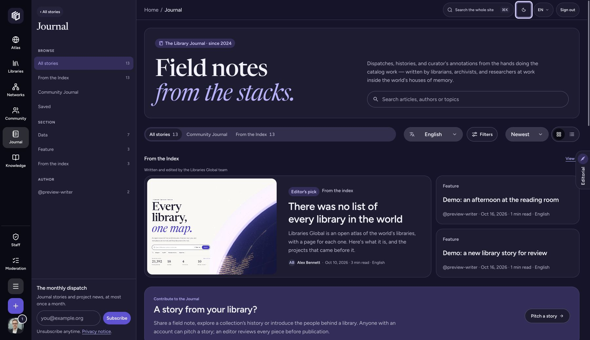
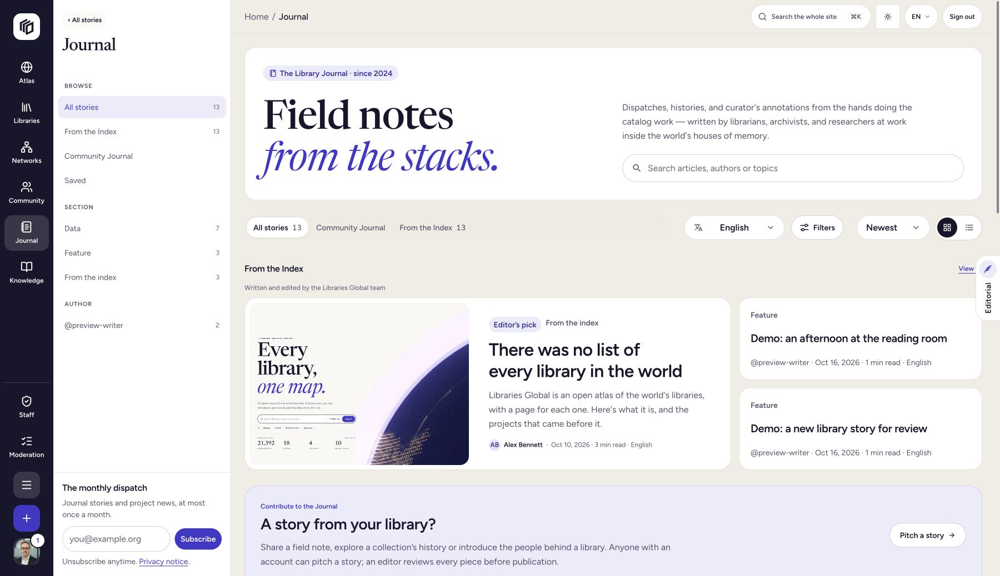
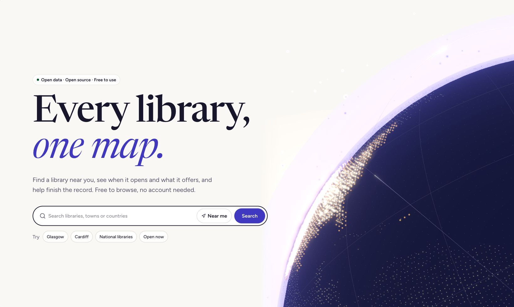

Dark mode — editorial reading proofEditorial reading proof · 30 October 2026 · not published
Dark mode and the UI overhaul
Content preview using existing article block types. This is not the production article renderer. Root-relative article links target the future site routes; use the contents links below to review this bundle.
Knowledge · Design system
How the site is designed
Libraries Global is an open reference work with people around it. Its design should help you find a fact, understand what supports it and add something useful when the record is incomplete.
A reference book you can work in
The light appearance borrows from printed reference books: a warm background, dark text, serif headings and indigo links. Longer reading needs comfortable line lengths and a clear rhythm. Working pages need labels, controls and enough structure to scan quickly.
We use the same underlying type and spacing rules across those tasks. The Journal has more room for stories and images. The Atlas gives space to maps and their controls. Staff pages put the record, the action and its status close together. Those differences should help explain the page's purpose.
Dark mode is being prepared as a second appearance. It will keep the hierarchy and character of the light design, with colours chosen for darker surfaces. It is not available as a site-wide control yet.
Colour and appearance
explains the intended choices.
Show what the record knows
A missing answer is not a negative answer. If a record says nothing about step-free access, the interface should show that the information is missing. It should not suggest that the building has no step-free entrance.
The same care applies to coverage. A gap on a map may be a gap in the index. Dates, sources and qualifications belong near the information they explain. We want a reader to be able to follow a claim back to its evidence, rather than treating a polished card as proof.
Colour helps you recognise things
Library types use broad colour families. National, parliamentary and state libraries use purple; public, municipal and mobile libraries use green; academic libraries use blue. Special, monastic, archive, private and cultural libraries use rust, while digital and other categories use grey.
The type name stays visible alongside the colour. A map legend, tag or status should still make sense if you cannot distinguish the hues. In a dark appearance, the background and text pair may change while the category keeps its identity.
Avatar colours are personal choices. They are separate from the interface appearance and from any claim of staff authority.
Consistency where it helps
Search, pagination, forms and menus should behave in familiar ways throughout the site. A shared component gives us one place to improve a label, a focus indicator or an error state.
We keep components specific when their job is specific. A map legend is different from a membership summary. Team membership, verification and access to a library must remain separately explained, even when their status labels share a visual pattern. Read more about
shared components and section identity
.
Access is part of the design work
Our target is WCAG 2.2 AA. Keyboard use, visible focus, meaningful headings, labelled controls and readable contrast belong in routine design reviews. Motion should respect a reader's preferences, and enlarging text should not hide the next action. These are requirements we work towards and test; this article is not a claim that every page has passed a complete assessment.
If something gets in the way, tell us what you were trying to do, the page and the browser or assistive technology involved. Avoid sending private account details. You can contact info@libraries.global or use the project's
GitHub issues
. The
accessible interaction guide
describes the checks in more detail.
For implementation details, see
Working on the code
.
Knowledge · Design system
Colour and appearance
Colour gives Libraries Global a recognisable character and helps organise information. It must also leave text, controls and important states clear enough to use.
Light, Dark and System
Dark mode is coming as part of the interface overhaul. The site-wide appearance controls have not shipped yet. The intended choices are Light, Dark and System, accessible from the header and account settings.
Light keeps the warm reading surface and dark ink. Dark uses deep indigo surfaces and lighter text. System follows the appearance preference reported by your browser, which often reflects your device setting. It will not guess from your location or the time of day.
Choosing Light or Dark will override System until you change the choice again. Choosing System will keep following the browser as its preference changes. A saved System choice is different from saving whichever appearance happened to be active at the time.
The planned controls will work for visitors without an account. A browser choice will stay on that browser where storage is available. Signed-in readers will also be able to save an account preference. If saving fails, the interface should say so rather than suggesting that the choice has reached every device.
Colours have jobs
The page canvas, a raised panel, ordinary text, a link and a focus indicator need different colour roles. A pale violet that reads well on a dark panel may disappear against a light page. A button needs a tested text-and-background pair of its own.
We define those roles in the shared theme so an improvement reaches the places that use it. Interactive states matter too: hover, focus, selected, loading, invalid and disabled. Checking a static screenshot is only the beginning.
Our contrast target follows
WCAG 2.2
: at least 4.5:1 for ordinary text and 3:1 for large text. Essential control boundaries and graphical information have their own contrast requirements. Quiet decoration does not have the same job as the outline that lets you find an input.
Meaning survives a change of appearance
Library types keep their broad colour families and written names. Status messages need words or icons as well as colour. “Waiting for verification” and “Membership active” describe different facts, even if both appear in small rounded labels.
Photos should retain their original colours. Maps, charts and illustrations need their own review: labels, selected areas and data categories must remain legible, with legends and other ways to understand the information where needed. Simply inverting an image would change the evidence as well as its appearance.
Your avatar colour is also separate from the interface theme. Changing the reading surface should not change your public identity.
Preference, rather than a prescription
Different readers prefer different appearances in different situations. We are adding a choice, without claiming that one theme is universally healthier or more accessible. Contrast, focus, zoom, motion and clear language still need attention in both.
See
How the site is designed
for the wider principles and
accessible interfaces and interaction
for the checks behind the rollout.
Knowledge · Design system
Accessible interfaces and interaction
Libraries Global should work for people using different screens, input methods and assistive technologies. Our target is WCAG 2.2 AA. This guide describes the design requirements and testing approach; it is not a completed conformance report.
Reading and finding your place
Headings should describe the page and its sections in a meaningful order. A larger visual heading does not automatically need a higher heading level. Links need names that make sense in context, and images need useful alternative text when they carry information.
Text must remain readable against its actual background. We check ordinary text, smaller metadata, links, form values and error messages in each supported appearance. A good contrast score for a headline does not establish that the whole page is readable.
Dark mode is forthcoming. It will be checked alongside Light, including menus, sheets and messages that appear after an action. Neither appearance can stand in for the other in testing.
Keyboard and touch
You should be able to reach and use controls with a keyboard and see where focus is. Menus and dialogs need predictable opening, closing and focus return. Sticky bars and drawers must not cover the control you are using.
Small controls need enough space to select reliably. WCAG 2.2 includes a 24 CSS-pixel minimum target-size criterion with specific exceptions; our design aim for primary touch controls is 44 CSS pixels. We also review the space between nearby actions.
A control's icon supplements its name. A sun or moon alone does not explain whether it describes the current appearance or the action you are about to take. The planned appearance menu will name Light, Dark and System explicitly.
Forms and changes
Labels must attach to the actual input. Help and error messages should be associated with the field they explain. When an action saves, fails or needs another step, the message should be available to assistive technology as well as visible on screen.
Loading should not erase a button's accessible name. A disabled action should not be the only explanation of what is required. Password managers and paste are part of usable authentication, rather than obstacles to design around.
Enlarged text and other preferences
We review text resizing, high zoom, narrow layouts and text-spacing changes. The page should preserve ordinary content and actions rather than hiding them when space becomes tight. Maps and complex tables may need two-dimensional navigation, but their surrounding instructions and controls still need to work.
Reduced-motion and forced-colour preferences need deliberate testing. Theme changes should not trigger an elaborate animation. Focus indicators and selected states must survive high-contrast settings.
Data and honest status
Colour cannot be the only way to recognise a category, result or warning. Maps need clear legends; charts need labels and an alternative reading where necessary. Unknown information should be described as unknown.
Team membership, verification and library-management permission remain distinct. An accessible label is useful only if it accurately describes the state.
Checking and reporting
Automated checks help catch recurring problems. They sit alongside manual keyboard, screen-reader, zoom and real-device checks. We use
WCAG 2.2
as the reference and track limitations rather than treating a passing scan as certification.
For current commitments and reporting routes, see the
accessibility statement
. A useful report includes the page, the task, what happened and your browser or assistive technology. Please leave out passwords, payment information and other private account details.
Knowledge · Design system
Shared components and section identity
Libraries Global has an Atlas, a Journal, a Knowledge hub and working areas for contributors and library staff. They share a design system, while leaving room for the kind of work each section supports.
Reuse the familiar mechanics
A search field should feel familiar when you move from a library list to a network page. Buttons, menus, form labels, pagination and feedback messages benefit from shared behaviour. Fixing the shared part can improve keyboard support or an error state in several places at once.
Shared parts also make a theme possible. A button should draw its colours from tested roles, rather than carrying a private copy of the palette. Light and Dark can then use the same component with different colour pairs. Dark mode is still being prepared; it is not a separate set of pages.
Compose patterns around a purpose
Some reusable pieces are larger than an individual control. A workspace page header can combine a title, description, context and action. A form section can group a heading, fields and its feedback. An empty state can explain what is missing and offer an appropriate next step.
Those patterns need room for useful variation. An onboarding page may explain a process; a working list should bring the records into view quickly. Reusing the header structure does not require an oversized banner on every screen.
The best abstraction makes the common rules easier to see. A component with dozens of unrelated switches can hide those rules. We prefer smaller pieces composed into a page when its needs are different.
Keep the specialist parts
A map legend, a discussion reply and an opening-hours table carry different meanings. They can reuse type, spacing, colours and control primitives without becoming one generic card.
Section identity follows that purpose. The Journal leaves room for images and longer reading. The Atlas gives priority to geography and the tools needed to understand it. Staff pages keep records, actions and access information close together.
Shared status styling needs particular care. Active Team membership describes an account entitlement. Verification describes a reviewed connection. Library access describes permission to manage particular records. Matching their shape is useful; merging their meaning would be misleading.
What Storybook is for
Storybook is our working component library. It lets us inspect a control without navigating an entire account flow. The useful examples include long labels, empty results, errors, loading, keyboard focus and constrained widths, as well as the tidy default.
The development library already has appearance controls; dark mode has not shipped on the site yet. Stories render the actual shared components in both Light and Dark, including menus and dialogs that appear outside the immediate story container.
A component being imported somewhere is not proof that its states have been reviewed. A screenshot also cannot show every keyboard or screen-reader interaction. We use examples, interaction checks and page-level review together.
Change once, check in context
When a shared part changes, it should be checked in the sections that use it. A smaller button may help a compact toolbar and make a touch action harder to select. A quiet divider may work on a reading page and disappear in a dense table.
The aim is fewer accidental differences and clearer purposeful ones.
How the site is designed
describes the principles, and
accessible interfaces and interaction
explains the checks that help make them practical.
Journal · From the Index · preview
A darker reading room, and a more consistent Libraries Global
Dark mode is coming to Libraries Global as part of a wider interface overhaul. Here is a first look at the design, and the small changes behind it.
Libraries Global has grown into several different kinds of place. You can look up an opening time, explore the Atlas, read a story, join a conversation or look after a library's record. Each task asks something different of the interface. A long article needs room to read. A staff workspace needs clear actions and a reliable account of what you can do.
We have been working on making those places feel more connected. Dark mode is the next part of that work: a second appearance that keeps the same type, hierarchy and indigo character.
These are screenshots from a development build. Dark mode and its appearance controls are coming to the site, but have not shipped yet.

Development preview of the Journal in dark mode. Includes labelled demonstration stories; dark mode has not shipped yet.
The same place, after dark
The light appearance takes its cues from a reference book: a warm page, dark ink and headings with a little space around them. The dark design moves to deep indigo surfaces, softer light text and violet accents. Panels still need to feel separate from the page behind them. Links still need to look like links.
We want both appearances to feel considered. Dark mode will not invert photographs or turn every border bright. Library categories will keep their familiar colour families, with labels alongside them. A pending request will still say what is pending.
The development build offers Light, Dark and System. System follows the preference reported by your browser. An explicit Light or Dark choice takes priority. The header and account settings use the same preference, with account saving for signed-in readers.

Development preview of the same Journal in light mode. The coming release will offer Light, Dark and System in the header and account settings.
Familiar controls, wherever you are
The wider overhaul is also about repeated details. Page titles, status labels, search fields and action rows should work predictably as you move between sections. Reusing those parts gives us fewer places to fix when a control needs better keyboard behaviour or a clearer error message.
There is room for different personalities. The Journal can have an editorial pace; the Atlas needs practical map tools. Sharing a button or a page-header pattern does not mean giving every section the same layout.
The staff area makes the distinction especially clear. Team membership, verification and permission to manage a library are different things. A tidy banner must explain them accurately. Paying for membership does not become a shortcut to library authority because the labels happen to sit together.

An excerpt from our development homepage. Dark mode is coming with the interface overhaul; it has not shipped yet.
Checking more than the palette
A theme reaches further than the page background. Menus, forms, charts, map controls, editors and loading states all need attention. So do focus indicators, text at high zoom and messages that appear when something goes wrong.
We are using the rollout to review those details in both appearances. Our target is WCAG 2.2 AA. That is a standard to test against, rather than a claim that a dark palette automatically makes a site accessible. Automated checks will sit alongside keyboard, screen-reader and zoom testing.
Our development component library, Storybook, has appearance controls too. It gives us a place to inspect the actual controls in light and dark, including the less photogenic states: saving, empty, disabled and failed.
There is more about the thinking in
How the site is designed
, with new notes on
colour and appearance
,
accessible interaction
and
shared components
.
It is good to see the pieces coming together. We will update this post when the controls are available. For now, this is a look at the reading room we are getting ready to open after dark.